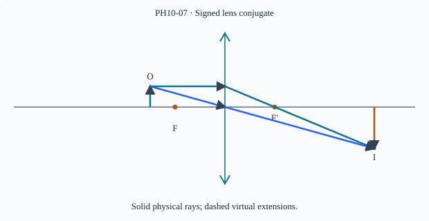

Prerequisite bridge
PH10-06
Before starting, identify the reference frame, directed rays, units and applicable geometric assumptions. Unbound prerequisites remain provisional.
Connected textbook foundation (preserved from PR #5)
7. Use one coherent sign convention
For a thin converging lens forming a real image of a real object, let u>0 be the magnitude of object-to-lens distance and v>0 the magnitude of lens-to-screen distance. Then 1/f=1/u+1/v. This positive-magnitudes relation applies directly to that real-imaging geometry.
A signed Cartesian convention instead takes the real object position negative if light travels left-to-right and positive coordinates point right, with the lens relation 1/f=1/v-1/u_{\rm signed}. Both approaches agree when their definitions are used consistently. They must not be mixed in the same substitution.
Worked anchor: A real object is 30 cm from a thin converging lens with f=20 cm. 1/v=1/20-1/30=1/60, so the real image forms at v=60 cm opposite the object. The magnitude of magnification is 60/30=2; the screen image is inverted. Substitute back to check.
Build and check the model
For a thin lens, choose +x along incident propagation; optical centre at 0. Signed distances satisfy 1/f=1/v−1/u, and m=v/u. A real object to left has u<0. A real transmitted image has v>0; virtual image on incident side has v<0. With d=−u>0 and v>0, 1/F=1/d+1/v for a converging lens; do not confuse that magnitude relation with the signed mirror law.
Worked anchor
f=+12 cm, u=−18 cm: 1/v=1/12−1/18=1/36, v=36 cm; m=−2. For u=−8 cm, v=−24 cm and m=+3.
Condition and limiting check
Thin and paraxial approximations required; a virtual object can have u>0, which changes familiar real-object domain conclusions.
Misconception repair
The minus sign in the lens equation is not interchangeable with the mirror equation's plus sign.
Reasoning diagram

Self-check before transfer
Diverging lens f=−20 cm,u=−20 cm. Find v and m.
Check the reasoning
v=−10 cm, m=+0.5; virtual upright.
Source and figure status
Curriculum pointer CBSE10; candidate scope only. Preserved chapter manuscript. Original subtopic-specific figure attached. Scientific figure and teaching-sufficiency reviews remain HOLD.